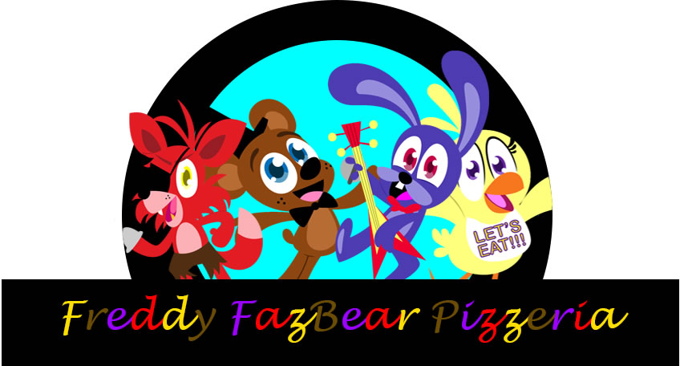
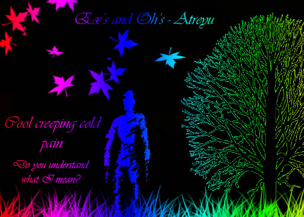

Graphics Design Portfolio: I have been into Graphic Design for about two years now. I started my Junior year in Mr. Conley's class. Please visit the my Web Design portion of my portfolio to see the sites I have created to view some of my Graphics work in play. If you wish to go back to the main page, Click the Graphic Design Logo at the top. |
Gas Mask:
Correct-O-Man:
Click Correct-O-Man's cover to see the rest of the book!  I made these for projects. The log above is hand made Graduation Announcements:For another project, I had to make a graduation announcement for Graphics class. If you hover over the picture, you will see both. Things I did while I had down time in Graphics Class: |